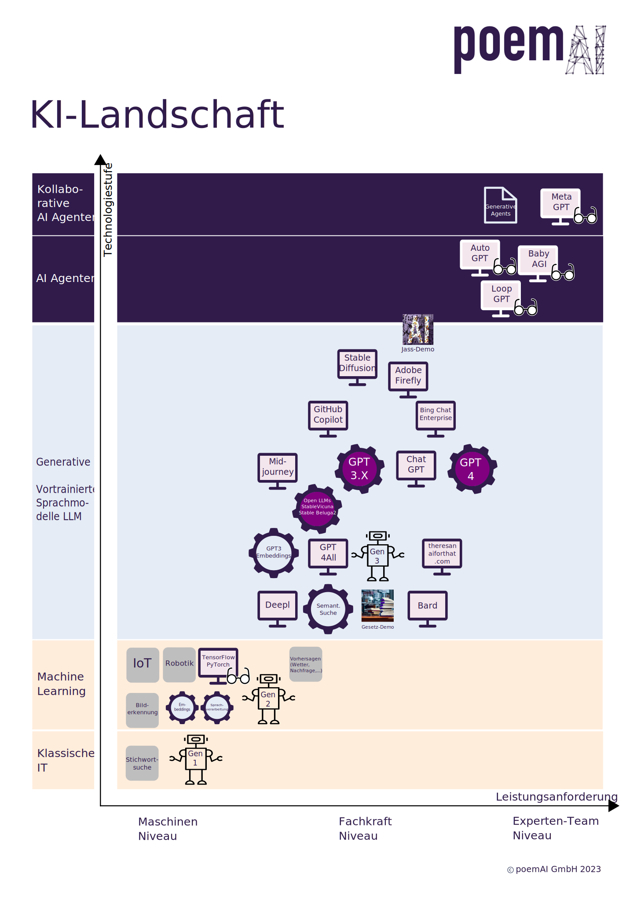

Opacc Campus Talk 13.09.2023
Künstliche Intelligenz
Hintergrundinformationen und KI-Landschaft zum Opacc Campus Talk vom 13 September 2023
poemai.ch

Referenzen
Thema
Titel
Link
KI im Alltag
"Wie haben wir poemAI.ch gebaut? Mit KI!“
https://poemai.ch/blog/ki_in_der_web_entwicklung
Poemai-Demo
Semantische Suche
https://poemai.ch/semantische_suche_baugesetze_luzern
Poemai-Demo
Jass-Demo
https://poemai.ch/jassen_mit_ki
LLM Explosion
"Harnessing the Power of LLMs in Practice: A Survey on ChatGPT and Beyond“
https://arxiv.org/abs/2304.13712
Semantische Suche & LLMs
“SGPT: GPT Sentence Embeddings for Semantic Search“
https://arxiv.org/abs/2202.08904
OpenAI Embeddings
https://platform.openai.com/docs/guides/embeddings/embeddings
Embeddings in 2D Visualisieren
McInnes et al. "UMAP: Uniform Manifold Approximation and Projection for Dimension Reduction"
https://arxiv.org/abs/1802.03426
UMAP User Manual
https://umap-learn.readthedocs.io/en/latest/index.html
AutoGPT
https://github.com/Significant-Gravitas/Auto-GPT
BabyAGI
https://github.com/yoheinakajima/babyagi
LoopGPT
https://github.com/farizrahman4u/loopgpt
Meta GPT
https://arxiv.org/abs/2308.00352
ChatGPT
https://chat.openai.com/
Google Bard
https://bard.google.com/
Github Copilot
https://github.com/features/copilot
Open Source Sprachmodell
Stable Beluga
https://stability.ai/blog/stable-beluga-large-instruction-fine-tuned-models
Open Source Sprachmodell
LLama
https://ai.meta.com/llama/
Open Source Sprachmodell
WizardLM
https://github.com/nlpxucan/WizardLM
Lokaler AI Chatbot (Datenschutz ist gewährleistet)
https://gpt4all.io/index.html
Bing Chat Enterprise
https://www.microsoft.com/en-us/bing/chat/enterprise
Mindjourney
https://www.midjourney.com/
Stable Diffusion
https://github.com/AUTOMATIC1111/stable-diffusion-webui
Machine Learning tools
TensorFlow
https://www.tensorflow.org/
Machine Learning tools
PyTorch
https://pytorch.org/
Deepl Übersetzer
https://www.deepl.com/